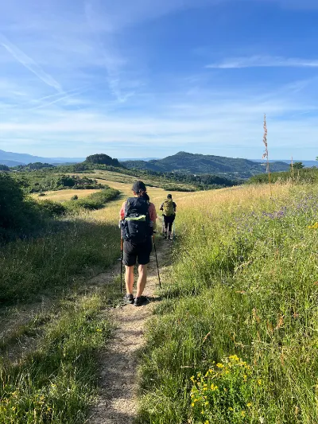
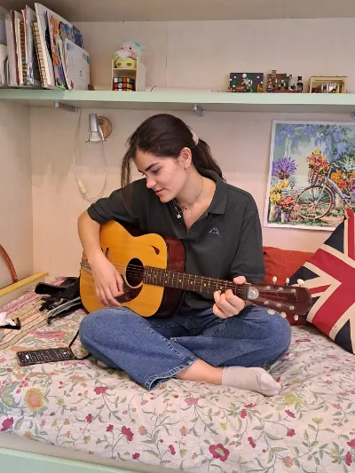
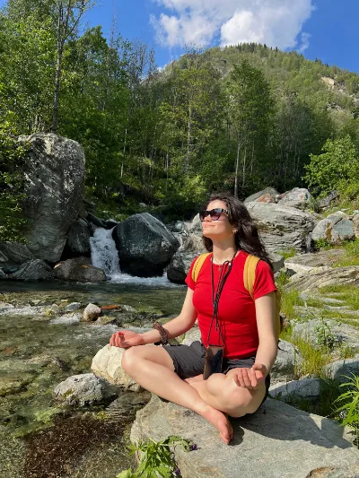

Natura, Cammini e Viaggi

Ciao, sono Federica.
Ciao, sono
Federica. Come
UX/UI Designer unisco la mia passione per la creatività a un approccio rigoroso ed empatico: il design
ènon è solo estetica, ma ascolto
e comprensione
dei bisogni dell'utente, indispensabili per costruire un'interfaccia intuitiva e naturale.
Analisi utente, ricerca preliminare e mappature dei flussi. Ideale per partire con basi solide e capire i bisogni del pubblico.
Progettazione interfacce digitali e prototipi high-fidelity.Progettazione di interfacce digitali, web e app, e creazione di prototipi interattivi high fidelity, pronti per essere testati.
Scrittura di testi orientati all'utente con l'uso di parole chiave.Scrittura e cura dei testi, micro-copy e delle etichette presenti nell'interfaccia, per guidare l'utente con tono chiaro ed empatico.
Creazione identità visiva e design system per un design scalabile.Costruzione dell'identità visiva, style guide e design system strutturati per garantire coerenza, ordine e scalabilità.
Svolgo una ricerca mettendo l'utente e le esigenze di accessibilità al centro.Prima di iniziare a progettare, svolgo una ricerca UX mettendo l'utente al centro, considerando anche le necessità legate all'accessibilità. Raccolgo i dati e mappo l'esperienza per capire cosa serve veramente.
Definisco flussi chiari e intuitivi per rendere l'esperienza accessibile a chiunque.Inizio a progettare flussi chiari, trasparenti e accessibili: il percorso deve essere intuitivo per chiunque, in qualunque situazione o ambiente.
Trasformo i wireframe in interfacce ordinate, curando gerarchie e design system.Do vita ai wireframe costruendo gerarchie visive ordinate e design system curati e coerenti. Tolgo il superfluo per ridurre il carico cognitivo e lasciare ciò che conta.
Valido il prototipo con i test e rifinisco i dettagli prima dello sviluppo.Valido il prototipo con dei test, rifinendo i dettagli per preparare il materiale al meglio prima dello sviluppo.




Hai un progetto in mente o vuoi solo scambiare delle idee?
Scrivimi oppure scopri il mio percorso nel CV.